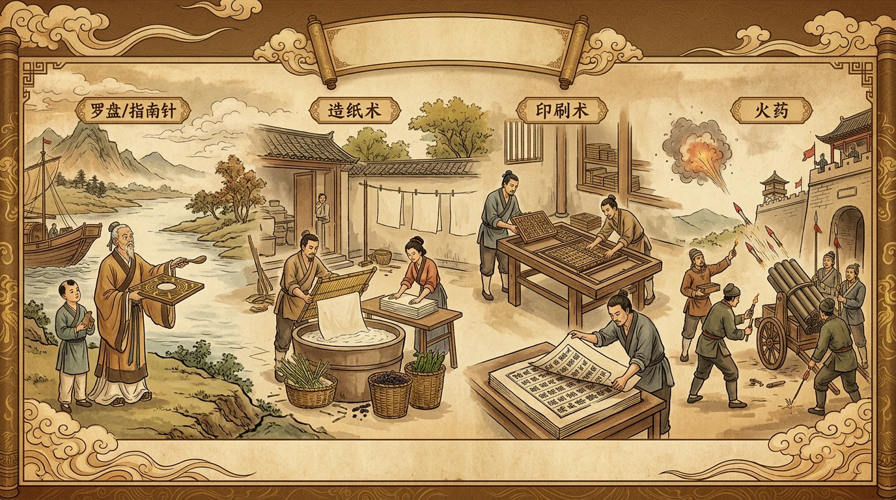

✨ 故事开场
14世纪，一位意大利修道士在拆解一艘从中国来的沉船上，发现了一块能指引方向的小磁铁。他称之为"奇迹之器"。然而，这"奇迹之器"在发明它的中国，早在200年前就已是航海标配。因此，四大发明的传播本身就是一部中西科技交流史——它们从东方诞生，却在西方引发了文明的加速。
📌 核心问题
为什么四大发明诞生在中国，又为什么没能推动中国率先进入近代？
📝 学前测验
【前测】关于四大发明，下列说法正确的是？
模块一：四大发明详解
📌 本模块问题
四大发明各自经历了怎样的"发明→成熟→外传→世界影响"的完整链条？
四大发明不是孤立的技术突破，而是古代中国社会经济发展的产物。它们在各自领域解决了核心问题：造纸解决书写载体、印刷解决信息复制、指南针解决空间定位、火药解决军事攻防。每项发明都经历了从萌芽到成熟的漫长过程。
记忆理解📜 造纸术
发明：西汉出现早期造纸技术，东汉蔡伦改进为"蔡侯纸"（约105年）。
成熟：唐代造纸技术成熟，纸张普及，书写材料从竹简帛绢转向廉价纸张。
外传：经中亚传入阿拉伯（751年怛罗斯之战），再传入欧洲（12世纪）。
世界影响：书写成本降低 90%以上，知识传播速度飞跃，为文艺复兴和宗教改革提供物质基础。
核心发明🖨️ 印刷术
发明：唐代出现雕版印刷（868年《金刚经》是现存最早标有日期的印刷品）。
成熟：北宋毕昇发明活字印刷（约1040年），文字可反复拆拼，成本再次骤降。
外传：经海上贸易传入欧洲，启发古腾堡印刷机（1440年）。
世界影响：信息复制革命，知识民主化，直接催生近代科学的传播条件。
核心发明🧭 指南针
发明：战国出现"司南"，北宋发明人工磁化技术，制成罗盘。
成熟：宋代海船普遍使用罗盘导航，海上贸易兴盛。
外传：随海上贸易传入阿拉伯（12世纪），再传入欧洲。
世界影响：大航海时代的核心技术，哥伦布（1492）、麦哲伦（1519-1522）环球探险的"眼睛"。
核心发明💥 火药
发明：唐代炼丹家发现火药配方（"硫磺伏火法"），最初用于烟火。
成熟：宋代军事广泛应用——火箭、突火枪、火炮相继出现。
外传：经陆上和海上丝绸之路传入阿拉伯和欧洲（13世纪）。
世界影响：摧毁封建城堡，打破骑士制度，加速欧洲封建社会解体，推动军队机械化。
核心发明🗺️ 四大发明世界传播路线
【基础练习 🌱】四大发明的世界意义
模块二：古代科技群星
📌 本模块问题
除了四大发明，中国古代还有哪些科技成就？它们在世界科技史上处于什么地位？
中国古代科技成就远不止四大发明。在天文历法、数学、农学、医学等领域，中国曾长期领先世界。这些成就共同构成了一个"技术发达但科学未独立"的独特格局——技术层面的创新能力极强，但缺乏系统化的理论探究。
理解分析🔭 天文历法
《石氏星表》（前4世纪）记录121颗恒星位置，是世界上最早的星表。唐代僧一行测量子午线长度，比欧洲早约1000年。元代郭守敬编《授时历》，年周期误差仅26秒，领先欧洲300年。
📐 数学
《九章算术》（前1世纪）是东方数学的代表，包含分数运算、方程解法。祖冲之将圆周率精确到3.1415926-3.1415927之间（480年），领先欧洲近千年。杨辉三角（1261年）比欧洲帕斯卡早300多年。
🌾 农学
《齐民要术》（433年）是中国现存最早最完整的农书。《农政全书》（1628年，徐光启）融合中西农学知识。中国在育种、水利、农具等方面长期领先。
💊 医学
《黄帝内经》（前2世纪）奠定中医学理论基础。《本草纲目》（1578年，李时珍）收录1892种药物，被达尔文称为"东方医学巨典"。针灸术在宋代已有系统的经络学说。
"中国...数学、天文学、医学和其他科学都远胜于我们。"
——伏尔泰《哲学辞典》（1764年）
朱载堉发明了"十二平均律"（将一个八度平均分成12个半音，1584年），比欧洲早约100年。巴赫的《平均律钢琴曲集》正是基于这套理论。
"中国...数学、天文学、医学和其他科学都远胜于我们。"
——伏尔泰《哲学辞典》（1764年）
伏尔泰的这一评价说明了什么？
模块三：为什么没有产生近代科学？
📌 本模块问题
古代中国科技如此发达，为何没有产生像欧洲那样的近代科学革命？"李约瑟之问"的答案是什么？
这是英国科技史家李约瑟在1940年代提出的著名问题。答案需要从多个维度来理解——不是"中国人不聪明"，而是古代中国的社会结构、经济形态和思想传统共同塑造了一种"技术优先、理论滞后"的科技发展模式。
分析评价创造🔍 "李约瑟之问"的多维解读
维度一：社会结构——科举制度的导向作用
科举以儒学经典为考试内容，科技人才的社会上升通道被阻塞。"万般皆下品，唯有读书高"的社会价值观，导致最优秀的人才流向仕途而非科技研究。
维度二：经济形态——小农经济的自给自足
自然经济条件下，技术创新的动力不足。四大发明中的三项（造纸、印刷、指南针）都与商品经济和海外贸易有关，说明技术突破往往发生在经济活动最活跃的领域。
维度三：思想传统——实用理性与理论探究的失衡
中国传统思维强调"经世致用"，重视技术解决实际问题，但轻视对自然规律的抽象探究。欧洲在古希腊时期就确立了"为知识而知识"的传统，这是近代科学的哲学基础。
维度四：交流环境——闭关锁国的封闭效应
明清时期实行海禁和闭关锁国政策，阻断了与欧洲的科技交流。而欧洲在16世纪后通过大航海建立了全球联系，形成了跨文化的知识竞争和交流网络。
⚖️ 中西科技发展路径对比
| 维度 | 中国传统科技 | 欧洲近代科学 |
|---|---|---|
| 核心特征 | 经验积累型，重实用 | 实验验证型，重理论 |
| 知识传承 | 师徒口传心授，保密性强 | 公开出版，学术共同体 |
| 创新动力 | 解决生产/生活问题 | 探索自然规律本身 |
| 方法论 | 归纳法为主，缺乏系统实验 | 归纳与演绎并重，强调实验 |
| 与权力关系 | 科技为皇权服务，受政治控制 | 科学独立于王权，形成自主传统 |
💡 核心洞察
"李约瑟之问"的深层答案是：古代中国在技术创新方面领先世界，但在科学方法论方面未能独立发展出实验科学。这不是民族智力问题，而是文明发展路径的差异——不同的社会结构、经济形态和思想传统，塑造了不同的科技发展模式。
如果中国在明清时期没有实行闭关锁国，而是像欧洲一样积极进行海上贸易和文化交流，科技发展路径会有什么不同？
🔬 本课小结
